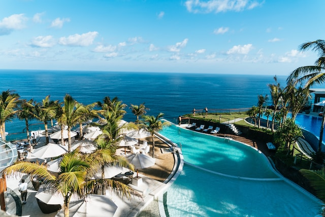
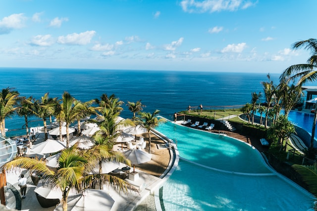
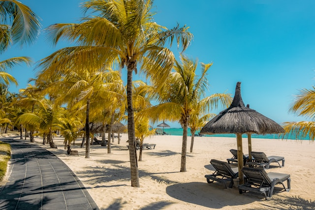
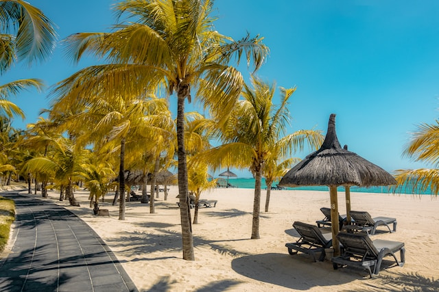

Kings Hotel, located in Mombasa, Kenya, is a luxurious oasis in the heart of East Africa. With its stunning views of the Indian Ocean and its lush tropical gardens, Kings Hotel is the perfect place to relax and unwind.
The hotel offers a variety of amenities and activities to keep guests entertained, including a private beach, multiple swimming pools, a spa, a fitness center, and a variety of restaurants and bars. Kings Hotel also offers a variety of tours and excursions, so guests can explore all that Mombasa has to offer.
The hotel's rooms and suites are spacious and well-appointed, with all the modern amenities guests need for a comfortable stay. Each room features a private balcony or terrace with stunning views of the ocean or the gardens.
Kings Hotel is the perfect place to stay for a romantic getaway, a family vacation, or a business trip. With its luxurious accommodations, world-class amenities, and friendly staff, Kings Hotel is sure to make your stay in Mombasa unforgettable.
Kings Hotel Nyali is a luxurious oasis on the shores of the Indian Ocean. With its stunning views of the white-sand beaches and crystal-clear water, Kings Hotel Nyali is the perfect place to relax and unwind.
The hotel offers a variety of amenities and activities to keep guests entertained, including a private beach, multiple swimming pools, a spa, a fitness center, and a variety of restaurants and bars. Kings Hotel Nyali also offers a variety of tours and excursions, so guests can explore all that Nyali has to offer.
The hotel's rooms and suites are spacious and well-appointed, with all the modern amenities guests need for a comfortable stay. Each room features a private balcony or terrace with stunning views of the ocean or the gardens.
Kings Hotel Nyali is the perfect place to stay for a romantic getaway, a family vacation, or a business trip. With its luxurious accommodations, world-class amenities, and friendly staff, Kings Hotel Nyali is sure to make your stay in Nyali unforgettable.
 

Kings Hotel Zanzibar is a luxurious boutique hotel located in the heart of Stone Town, Zanzibar's UNESCO World Heritage Site. The hotel is housed in a beautifully restored 19th-century building and offers a unique blend of traditional Zanzibari style and modern amenities.
Kings Hotel Zanzibar offers a variety of amenities and activities to keep guests entertained, including a rooftop pool and bar, a spa, a fitness center, and a variety of restaurants and bars. The hotel also offers a variety of tours and excursions, so guests can explore all that Zanzibar has to offer.
The hotel's rooms and suites are spacious and well-appointed, with all the modern amenities guests need for a comfortable stay. Each room features a private balcony or terrace with stunning views of Stone Town or the Indian Ocean.
Kings Hotel Zanzibar is the perfect place to stay for a romantic getaway, a family vacation, or a business trip. With its luxurious accommodations, world-class amenities, and friendly staff, Kings Hotel Zanzibar is sure to make your stay in Zanzibar unforgettable.
Kings Hotel is an oasis of peace and calm in the bustling city of Mombasa and a great place to meet business and leisure travelers from all around the Africa. Conveniently located in the Kizingo area, it is the perfect base for your Mombasa visit. As a five star hotel, we feature:
Experience the warmth of Mombasa with our hospitality in this dynamic, cosmopolitan city. The King's features stylish spaces celebrating the spirit of Kenya. Our country breakfast is served daily and our restaurant offers full service in a tranquil and beautiful setting